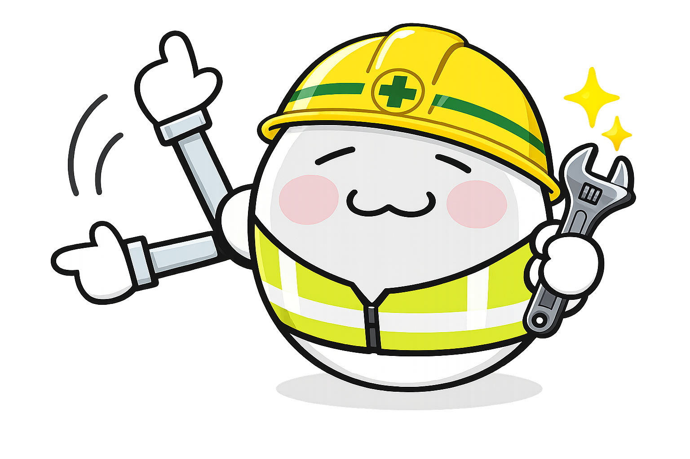

개요
Keepiluv-Agent는 Android 앱 개발을 위한 AI Agent 입니다.
12개의 전문 Sub Agent가 자율적으로 협업하며 지식을 축적하는 살아있는 개발 환경입니다.
개발 과정에서 반복되는 지식을 Wiki에 축적하여 효율적으로 개발할 수 있습니다.

Reference
프로젝트의 핵심 지식
- 프로젝트 개요
- 아키텍처 원칙
- 도메인 용어집
- 테스트 전략
Operations
Agent 작업 운영 기준
- Agent 라우팅: 요청 의도별 Agent 선택
- 워크플로우: 에이전트간의 작업 순서
- Agent 목록: 12개 Agent 역할 정의
Schema
Wiki 관리 체계
- 운영 흐름: 등록, 검색, 검증 프로세스
- 자동 유지보수: 코드 변경 시 자동 업데이트
- 출처 정책: 정보 출처 명시 및 관리
- 검사 기준: 문서 품질 유지 기준
Authority 시스템
Wiki 문서는 신뢰도 수준에 따라 3단계로 구분됩니다.
canonical
공식 사실과 정책. Agent가 따라야 할 최종 기준
synthesized
canonical을 연결해 설명. 충돌 시 canonical 우선
none
지식 후보. 2회 이상 사용 시 승격 검토
Obsidian 연동
Obsidian을 사용해 Graph View, Backlinks, Properties 등의 강력한 지식 탐색 기능을 활용 가능
Agent Orchestration
각 Agent는 명확한 역할을 가지고 사용자의 요청 의도를 분석해 적절한 Agent에게 자동으로 연결
explore
코드베이스를 탐색하고 필요한 정보를 찾습니다.
탐색 전문가
역할: 프로젝트에서 특정 파일이나 코드를 빠르게 찾아주는 검색 전문가입니다.
사용법:
- "이 기능이 어디에 있어?"
- "이 파일 어디서 사용하고 있어?"
- "ViewModel이 몇 개나 있어?"
특징: 파일만 읽고 수정하지 않아서 안전하고 빠릅니다.
writer
문서를 작성하고 지식 베이스를 업데이트합니다.
문서 작성자
역할: README, 사용 가이드, 변경 이력 같은 프로젝트 문서를 작성하고 관리합니다.
사용법:
- "README 파일 만들어줘"
- "이 기능 가이드 작성해줘"
- "CHANGELOG 업데이트해줘"
특징: 프로젝트의 기존 문서 스타일을 그대로 따라 일관성 있게 작성합니다.
interviewer
모호한 요구사항을 명확히 하고 Feature Spec을 작성합니다.
요구사항 정리사
역할: 애매한 요청을 정확한 작업 명세서로 바꿔줍니다.
사용법:
- "뭔가 이상한데 고쳐줘" → "어떤 상황에서 뭐가 문제인가요?"
- "기능 추가해줘" → "어떤 기능을 왜 추가하나요?"
특징: 최대 3개 질문으로 핵심만 물어보고, 합리적으로 추측 가능한 건 미리 제안합니다.
planner
구현 계획을 수립하고 작업을 단계별로 분해합니다.
계획 수립자
역할: 큰 작업을 작은 단계로 나누고, 어떤 순서로 진행할지 계획합니다.
사용법:
- "로그인 기능 어떻게 만들어?"
- "이 기능 추가하려면 뭐 바꿔야 해?"
특징: Domain → Data → Presentation → UI 순서로 체계적으로 계획하고, 위험도도 함께 분석합니다.
tester
테스트 코드를 작성하고 검증 전략을 수립합니다.
테스트 작성자
역할: 코드가 제대로 동작하는지 자동으로 확인하는 테스트를 작성합니다.
사용법:
- "이 기능 테스트 작성해줘"
- "버그 수정하기 전에 테스트 먼저 만들어줘"
특징: 가장 효율적인 테스트 방법을 선택하고, 실패 테스트를 먼저 만들어 implementer에게 전달합니다.
implementer
실제 코드를 구현하고 기능을 완성합니다.
코드 구현자
역할: 계획과 테스트를 받아서 실제로 동작하는 코드를 작성합니다.
사용법:
- "이 기능 구현해줘"
- "버그 고쳐줘"
- "리팩토링해줘"
특징: 10년 경력 Android 개발자 수준으로, 테스트를 통과하도록 코드를 작성하고 코딩 규칙을 자동으로 적용합니다.
code-reviewer
코드 품질을 검토하고 개선 사항을 제안합니다.
코드 검토자
역할: Dove Letter 베스트 프랙티스를 기반으로 코드 품질을 심층 분석합니다.
사용법:
- "이 코드 리뷰해줘"
- "성능 문제 없어?"
- "버그 있는지 확인해줘"
특징: 크래시 위험, 성능 문제, 안정성 이슈를 우선순위별로 분류하고, Before/After 코드로 구체적인 수정 방법을 제시합니다.
analyst
아키텍처를 분석하고 구조적 개선 방안을 제시합니다.
구조 분석가
역할: 전체 프로젝트 구조를 분석하고 문제점과 개선 방향을 제시합니다.
사용법:
- "프로젝트 구조 분석해줘"
- "아키텍처 문제점 찾아줘"
- "모듈 의존성 분석해줘"
특징: Clean Architecture 준수 여부, 레이어 분리, 순환 참조 같은 구조적 문제를 발견하고 우선순위를 매겨 보고합니다.
performance-optimizer
성능 병목을 분석하고 최적화 방안을 제시합니다.
성능 최적화 전문가
역할: 앱 속도, 메모리 사용, 화면 렌더링 성능을 측정하고 개선합니다.
사용법:
- "앱이 느려, 최적화해줘"
- "메모리 누수 찾아줘"
- "시작 시간 빠르게 해줘"
특징: Compose 리컴포지션, 메모리 누수, 시작 시간 등을 측정 기반으로 개선하고, 벤치마크로 효과를 검증합니다.
wiki-maintainer
Wiki를 자동으로 동기화하고 지식을 최신 상태로 유지합니다.
지식 관리자
역할: 코드 변경 시 반복되는 지식을 자동으로 Wiki에 기록하고 최신 상태로 유지합니다.
사용법:
- 도메인 정책이 변경될 때
- 반복되는 패턴을 발견했을 때
- Agent 운영 규칙이 생겼을 때
특징: 승인된 작업 범위 안에서 자동으로 Wiki를 동기화하고, Draft PR로 검토 후 사용자가 최종 승인합니다.
committer
변경사항을 커밋하고 Git 히스토리를 관리합니다.
커밋 관리자
역할: 변경된 파일을 분석하고 프로젝트 규칙에 맞는 커밋 메시지를 작성합니다.
사용법:
- "커밋해줘"
- "변경사항 저장해줘"
특징: 이모지와 Type을 포함한 한글 커밋 메시지를 자동 생성하고, 사용자 승인 후에만 커밋합니다.
pr-creator
Pull Request를 생성하고 변경 내역을 문서화합니다.
PR 생성자
역할: 현재 브랜치의 변경사항을 분석해 템플릿에 맞춰 Pull Request를 생성합니다.
사용법:
- "PR 만들어줘"
- "Pull Request 생성해줘"
특징: 커밋 메시지를 분석해 작업 내용을 정리하고, 이슈 번호를 자동으로 연결하며, UI 변경 시 결과물 첨부를 안내합니다.
Reusable Skills
반복되는 작업 패턴을 재사용 가능한 Skill로 정의하여 Agent들이 일관되게 활용합니다.
test-workflow
테스트 작성, 검증, implementer 인계까지 표준화된 테스트 워크플로우
테스트 작성 절차
역할: 가장 효율적인 테스트 레벨을 선택하고, 테스트를 작성한 뒤 구현자에게 전달하는 표준 절차입니다.
핵심 원칙:
- 위험에 맞는 가장 낮은 테스트 레벨 선택
- 실패 테스트를 먼저 작성
- Given-When-Then 구조로 명확하게 작성
사용 예: tester Agent가 Domain, ViewModel, Compose UI 테스트를 작성할 때 이 절차를 따릅니다.
coding-conventions
Kotlin/Android 코딩 컨벤션을 일관되게 적용하는 절차
코딩 규칙 적용
역할: 프로젝트의 Kotlin/Android 코딩 규칙을 일관되게 적용하는 절차입니다.
주요 규칙:
- 함수는 15줄, 클래스는 50줄 이내
- get/set 접두사 금지
- 매직 넘버 금지
- Domain → Data → Presentation → UI 순서
사용 예: implementer가 코드를 작성하거나 planner가 계획을 세울 때 참조합니다.
working-fence
가정, 단순성, 변경 범위를 관리하는 작업 경계 설정
작업 범위 관리
역할: 코드 변경 전에 범위를 명확히 하고, 최소한만 수정하는 원칙입니다.
4가지 원칙:
- 먼저 생각: 가정을 명확히 하기
- 단순하게: 필요한 것만 만들기
- 관련 부분만: 요청된 것만 바꾸기
- 검증으로 완료: 테스트로 확인하기
사용 예: implementer가 구현하거나 리팩터링할 때 변경 범위를 최소화합니다.
command-commit
Git 커밋 생성을 위한 표준화된 절차
커밋 생성 절차
역할: 변경사항을 분석하고 커밋 메시지를 작성한 뒤 사용자 승인 후 커밋하는 절차입니다.
절차:
- 변경 파일 분석 (git status, git diff)
- 커밋 메시지 후보 작성
- 사용자 승인 대기
- 승인 후 커밋 실행
사용 예: committer Agent가 이 절차를 따라 안전하게 커밋을 생성합니다.
command-impl
구현 작업을 위한 표준 워크플로우
계획→테스트→구현 흐름
역할: 계획 수립, 테스트 작성, 코드 구현을 순서대로 진행하는 표준 워크플로우입니다.
3단계 절차:
- 1단계: planner가 구현 계획 수립
- 2단계: 사용자 승인 대기
- 3단계: tester → implementer 순차 실행
사용 예: 사용자가 "/impl" 명령을 실행하면 이 흐름이 자동으로 진행됩니다.
command-pr
Pull Request 생성을 위한 표준화된 절차
PR 생성 절차
역할: 브랜치 변경사항을 분석하고 PR 본문을 작성한 뒤 사용자 확인 후 생성하는 절차입니다.
절차:
- 브랜치 상태 및 변경사항 분석
- 템플릿에 맞춰 PR 본문 작성
- 사용자 확인 대기
- 확인 후 push 및 PR 생성
사용 예: pr-creator Agent가 이 절차를 따라 템플릿 기반 PR을 생성합니다.
wiki-maintainer
Wiki 자동 동기화 및 상태 관리 워크플로우
Wiki 동기화 절차
역할: 승인된 작업에서 Wiki 변경을 감지하고 자동으로 동기화하는 절차입니다.
주요 단계:
- Wiki 변경 상태 확인
- 도메인 정책/반복 지식 판단
- Wiki, Index, Log 자동 갱신
- 검증 후 Draft PR 생성
사용 예: wiki-maintainer Agent가 코드 변경 후 지식을 Wiki에 자동 반영할 때 사용합니다.
성과
체계적으로 구축된 지식과 자동화 시스템의 규모입니다.
왜 이 프로젝트가 특별한가요?
단순한 앱 개발이 아닌, AI와 협업하는 개발 환경 자체를 설계한 경험입니다.
지식 관리, Agent 오케스트레이션, 자동화 파이프라인까지 - 개발의 개발을 고민했습니다.